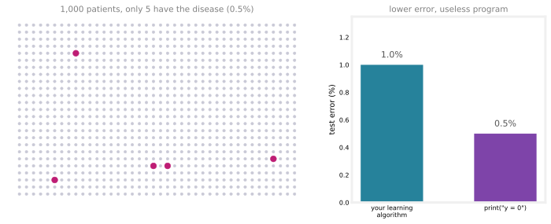
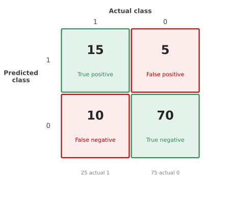
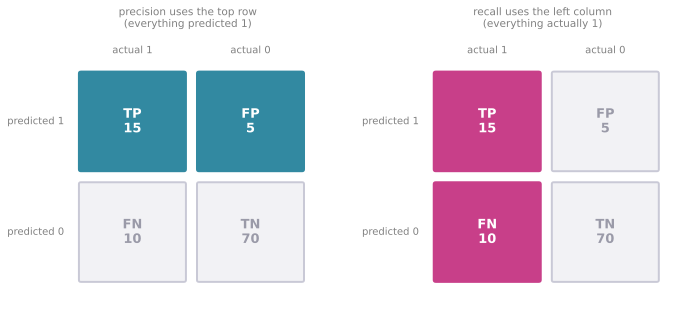
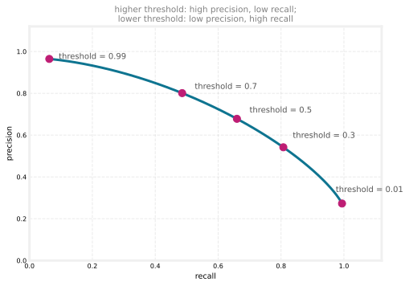
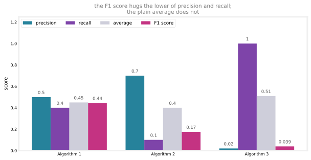

Skewed Datasets: Precision, Recall, and the F1 Score
machine-learning
neural-networks
Why accuracy misleads on rare classes, and how the confusion matrix, precision, recall, and the F1 score evaluate classifiers on skewed data.
The machine learning development process closed with a promise. There is one more practical tool for the toolbox, and it applies when you are working on an application where the ratio of positive to negative examples is very skewed, very far from 50-50. It turns out that in this situation the usual error metrics, like accuracy, do not work that well, and a different pair of metrics, precision and recall, takes their place.
Why Accuracy Fails on Skewed Data
Say you are training a binary classifier to detect a rare disease in patients, based on lab tests or other data from the patients. The label is \(y = 1\) if the disease is present and \(y = 0\) otherwise.
Suppose you find that your classifier achieves 1% error on the test set, so it makes a correct diagnosis 99% of the time. That seems like a great outcome. But if the disease is rare, say only 0.5% of the patients in the population have it, then this result is not as impressive as it sounds. Consider a program that is just one line long and does no learning at all.
print("y = 0")This program predicts \(y = 0\) every single time. Since 99.5% of patients do not have the disease, it is right 99.5% of the time, so it has 0.5% error, beating the learning algorithm that had 1% error.
A piece of software that just prints \(y = 0\) is not a very useful diagnostic tool. It never diagnoses any patient as having the disease. What this really means is that on a skewed dataset, you cannot tell whether 1% error is a good result or a bad result. If one algorithm achieves 99.5% accuracy, another 99.2%, and a third 99.6%, it is difficult to know which is actually the best, because the one with the lowest error may be a not particularly useful predictor like the always-zero program. Quite possibly the algorithm with 1% error, which at least diagnoses some patients as having the disease, is more useful than the one with 0.5% error that diagnoses no one.
When working on problems with skewed datasets, we therefore usually use a different error metric rather than plain classification error. The most common pair of metrics is precision and recall, and building up to them starts with a small table called the confusion matrix.
Review Questions
1. A classifier for a rare condition reports 99% accuracy. Why is this number, on its own, not enough to conclude that the classifier is good?
TipAnswer
Because with a skewed dataset a trivial program can beat it. If only 0.5% of examples are positive, always predicting \(y = 0\) scores 99.5% accuracy while being completely useless, since it never detects a single positive case. High accuracy on skewed data can simply reflect the skew, not any real predictive ability.
1. What does it mean for a dataset to be skewed?
TipAnswer
The ratio of positive to negative examples is very far from 50-50. In the rare disease example, only 0.5% of patients have the disease (\(y = 1\)) and 99.5% do not (\(y = 0\)), so the positive class is very rare.
Confusion Matrix
To evaluate how a learning algorithm performs when one class is rare, it is useful to construct a confusion matrix, a two-by-two table. Along the top goes the actual class, 1 or 0. Along the vertical axis goes the predicted class, what the learning algorithm predicted on a given example.
Say you have 100 cross-validation examples. For each example, it lands in one of four cells depending on the prediction and the truth. Suppose the counts come out as in the matrix below. On 15 examples the algorithm predicted 1 and the actual label was also 1; on 5 it predicted 1 but the actual class was 0; on 10 it predicted 0 but the actual class was 1; and on 70 it predicted 0 and the actual class was 0.

Adding the columns vertically, these 100 examples contain 25 where the actual class is 1 and 75 where it is 0, so the skew here is not as extreme as the 0.5% disease example, but the positive class is still the minority. Each of the four cells has a name.
- True positive (15). The algorithm predicted positive, and that was true. The example really is positive.
- True negative (70). The algorithm predicted negative, and that was true. The example really is negative.
- False positive (5). The algorithm predicted positive, but that was false. The actual class is 0.
- False negative (10). The algorithm predicted negative, but that was false. The actual class is 1.
The first word (true or false) says whether the prediction was correct, and the second word (positive or negative) says what the prediction was.
NoteSame table in the statistics course
This table may look familiar. The hypothesis testing notes lay out the exact same four cells for a spam detector, with Reality across the top and Decision down the side. In that language, a false positive is a Type I error (rejecting a true \(H_0\)) and a false negative is a Type II error (failing to reject a false \(H_0\)). The machine learning version simply fills the cells with counts from a whole cross-validation set instead of reasoning about a single decision.
Review Questions
1. Your algorithm predicts \(y = 1\) for a patient who does not have the disease. Which cell of the confusion matrix does this example land in?
TipAnswer
False positive. The prediction was positive (\(y = 1\)), and it was false because the actual class is 0. The second word records the prediction, and the first word records whether that prediction was right.
1. Using the counts above (15 true positives, 5 false positives, 10 false negatives, 70 true negatives), how many examples did the algorithm classify correctly, and how many actual positive examples are there?
TipAnswer
It classified \(15 + 70 = 85\) examples correctly (the true positives plus the true negatives). There are \(15 + 10 = 25\) actual positives, the true positives plus the false negatives, which is the sum down the “actual class 1” column.
1. A “false negative” means which of the following?
The algorithm predicted 1 and the actual class was 1
The algorithm predicted 0 and the actual class was 0
The algorithm predicted 1 and the actual class was 0
The algorithm predicted 0 and the actual class was 1
TipAnswer
d. The prediction was negative (predicted 0), and it was false, meaning the actual class was 1. Option (c) is a false positive, and options (a) and (b) are the true positive and true negative cells.
Precision and Recall
Having divided the classifications into the four cells, two common metrics to compute are precision and recall. In these definitions, \(y = 1\) is the rare class we want to detect.
Precision asks, of all the patients where we predicted \(y = 1\), what fraction actually has the rare disease? In other words, of all the examples predicted positive, what fraction did we get right?
\[ \text{precision} = \frac{\text{true positives}}{\text{\# predicted positive}} = \frac{\text{true positives}}{\text{true positives} + \text{false positives}} = \frac{15}{15 + 5} = 0.75 \]
Recall asks, of all the patients that actually have the rare disease, what fraction did we correctly detect as having it?
\[ \text{recall} = \frac{\text{true positives}}{\text{\# actual positives}} = \frac{\text{true positives}}{\text{true positives} + \text{false negatives}} = \frac{15}{15 + 10} = 0.6 \]
The two metrics read off different slices of the confusion matrix. Precision looks across the predicted positive row, and recall looks down the actual positive column.

In this example the algorithm has a precision of 75% and a recall of 60%. A precision of 75% means that of all the patients it thought had this rare disease, it was right 75% of the time. A recall of 60% means that of all the patients who actually have the disease, it correctly found 60% of them.
NoteConnection to Bayes theorem
Both metrics are conditional probabilities from the probability course. Precision estimates \(P(\text{actually } 1 \mid \text{predicted } 1)\), which is exactly the quantity the medical test example computed with Bayes theorem, and recall estimates \(P(\text{predicted } 1 \mid \text{actually } 1)\), the effectiveness of the test on sick patients. The surprise on that page, a 99% accurate test whose positive results are almost all false alarms because the disease is so rare, is precisely what low precision on a skewed dataset looks like. The base rate there is the skew here.
Notice how this pair of metrics catches the useless always-zero program. If an algorithm predicts \(y = 0\) all the time, it has no true positives, so the numerator of both quantities is zero. The recall in particular becomes \(0\) divided by the number of actual positives, which equals \(0\). In general, a learning algorithm with either zero precision or zero recall is not a useful algorithm.
NoteSide note on zero precision
If an algorithm truly never predicts a single positive, the precision formula becomes \(0/0\), which is undefined. In practice, when an algorithm does not predict even one positive example, we just say its precision is also equal to \(0\).
Computing both precision and recall makes it easier to spot whether an algorithm is both reasonably accurate, in that when it says a patient has the disease there is a good chance it is right (such as the 0.75 chance here), and also catching a reasonable fraction of the actual cases (here, finding 60% of them). When you have a rare class, checking that both numbers are decently high helps reassure you that the learning algorithm is actually useful. The term recall itself was motivated by the question, of all the patients in a population who have the disease, how many would the algorithm have accurately diagnosed, or “recalled,” as having it?
Review Questions
1. In plain language, what different questions do precision and recall answer?
TipAnswer
Precision answers, of all the examples the algorithm predicted as positive, what fraction really are positive? Recall answers, of all the examples that really are positive, what fraction did the algorithm find? Precision measures how trustworthy a positive prediction is, and recall measures how many of the actual positives get detected.
1. A classifier evaluated on 200 cross-validation examples produces 30 true positives, 20 false positives, 10 false negatives, and 140 true negatives. Compute its precision and recall.
TipAnswer
\[\text{precision} = \frac{30}{30 + 20} = \frac{30}{50} = 0.6 \qquad \text{recall} = \frac{30}{30 + 10} = \frac{30}{40} = 0.75\] When it predicts positive it is right 60% of the time, and it finds 75% of the actual positive examples.
1. Which metric, precision or recall, is guaranteed to expose the program that always prints \(y = 0\), and why?
TipAnswer
Recall. The always-zero program has no true positives, so its recall is \(0\) divided by the number of actual positives, which is exactly \(0\). (Its precision is \(0/0\), which is undefined, and by convention we also call it \(0\) when no positives are ever predicted.) A recall of zero flags the algorithm as useless no matter how high its accuracy is.
Trading Off Precision and Recall
In the ideal case we would like algorithms with high precision and high recall. High precision would mean that if it diagnoses a patient with the rare disease, the patient probably does have it. High recall means that if there is a patient with the rare disease, the algorithm will probably correctly identify them. In practice, though, there is often a trade-off between the two.
Recall how logistic regression makes predictions. The model outputs a number between 0 and 1, and we typically threshold at 0.5, predicting 1 if \(f_{\vec{w},b}(\vec{x}) \geq 0.5\) and 0 if \(f_{\vec{w},b}(\vec{x}) < 0.5\).
Raising the threshold raises precision and lowers recall. Suppose we want to predict \(y = 1\), the disease is present, only if we are very confident, perhaps because a positive diagnosis sends the patient to an invasive and expensive treatment, and the consequences of the disease are not that bad if it is left untreated for a while. Then we might set a higher threshold and predict 1 only when \(f_{\vec{w},b}(\vec{x}) \geq 0.7\), that is, only when we are at least 70% sure. Whenever the algorithm predicts 1, it is now more likely to be right, so precision increases. But it predicts 1 less often, so of the total number of patients with the disease, it correctly diagnoses fewer of them, and recall drops. Raise the threshold to 0.9 and precision goes even higher, while recall goes even further down.
Lowering the threshold lowers precision and raises recall. Now suppose we want to avoid missing too many cases of the disease. When in doubt, predict \(y = 1\). This might be the right philosophy when treatment is not too invasive, painful, or expensive, but leaving the disease untreated has much worse consequences for the patient. In that case we might set the threshold to 0.3, predicting 1 whenever there is a 30% chance or better of the disease being present. We are now looser, more willing to predict 1 even when unsure, so precision falls, but of all the patients who do have the disease, we correctly identify more of them, so recall rises.
More generally, we have the flexibility to predict 1 only when \(f_{\vec{w},b}(\vec{x})\) is above some threshold, and by choosing the threshold we can make different trade-offs. For most learning algorithms, sweeping the threshold from very high to very low traces out a curve like the one below.

A very high threshold, say 0.99, lands at the top left, very high precision but low recall. As the threshold decreases, the operating point slides along the curve, until a very low threshold, say 0.01, ends up at the bottom right with very low precision but relatively high recall. By plotting this curve, you can pick the point, that is, the threshold, that best balances the cost of false positives against the cost of false negatives for your application.
WarningPicking the threshold is your job, not cross-validation’s
Choosing the threshold is not something you can really do with cross-validation, because it is up to you to specify the best trade-off point. Whether missing a disease case is worse than an unnecessary treatment depends on the application, not on any error number the data can minimize. For many applications, manually picking the threshold to trade off precision and recall is what you will end up doing.
Review Questions
1. You raise the prediction threshold from 0.5 to 0.9. What happens to precision and recall, and why?
TipAnswer
Precision goes up and recall goes down. The algorithm now predicts 1 only when it is very confident, so when it does predict 1 it is more likely to be right (higher precision). But it predicts 1 much less often, so it correctly identifies a smaller fraction of the patients who actually have the disease (lower recall).
1. Give a situation where you would deliberately lower the threshold below 0.5, and explain the reasoning.
TipAnswer
When missing a positive case is much worse than a false alarm. For example, if a disease has terrible consequences when left untreated but the treatment is cheap and not very invasive, you might predict \(y = 1\) whenever the model estimates even a 30% chance of disease. Precision falls, since more of the positive predictions are wrong, but recall rises, since far fewer true cases slip through undetected.
1. Why can the best threshold not simply be chosen automatically by minimizing the cross-validation error?
TipAnswer
Because the right trade-off depends on the real-world costs of the two kinds of mistakes, false positives versus false negatives, and those costs are not in the data. Whether an invasive treatment for a healthy patient is better or worse than an untreated sick patient is an application-level judgment, so for many applications the threshold is picked manually from the precision-recall curve.
F1 Score
If you want to automatically trade off precision and recall rather than judging the balance yourself, there is another metric, the F1 score, that combines them into a single number. One challenge with precision and recall is that you are now evaluating algorithms with two different metrics. Suppose you have trained three algorithms and their numbers come out as follows.
| Precision \(P\) | Recall \(R\) | Average ✗ | \(F_1\) score | |
|---|---|---|---|---|
| Algorithm 1 | 0.5 | 0.4 | 0.45 | 0.444 |
| Algorithm 2 | 0.7 | 0.1 | 0.40 | 0.175 |
| Algorithm 3 | 0.02 | 1.0 | 0.51 | 0.0392 |
If one algorithm were better on both precision and recall, you would probably just pick that one. But here, Algorithm 2 has the highest precision, Algorithm 3 has the highest recall, and Algorithm 1 trades off the two in between, so no algorithm is obviously the best choice. To decide, it helps to combine precision and recall into a single score and pick the algorithm with the highest one.
Taking the plain average does not work well. The averages are 0.45, 0.40, and 0.51, which would crown Algorithm 3. But look at its numbers. A recall of 1.0 with a precision of 0.02 corresponds to an algorithm that more or less prints \(y = 1\) all the time and diagnoses every patient as having the disease. Recall is perfect, precision is dreadful, and the algorithm is not actually useful. An algorithm with very low precision or very low recall is pretty much not useful, so let us not use the plain average.
The most common way of combining the two is the F1 score, an average of sorts that pays more attention to whichever value is lower. Instead of averaging \(P\) and \(R\), average \(\frac{1}{P}\) and \(\frac{1}{R}\), and then take the inverse of that.
\[ F_1 = \frac{1}{\dfrac{1}{2}\left(\dfrac{1}{P} + \dfrac{1}{R}\right)} = 2\,\frac{PR}{P + R} \]
Averaging \(1/P\) and \(1/R\) gives much greater emphasis to whichever of \(P\) or \(R\) is very small, because a tiny value makes its reciprocal huge. Computing the F1 score for the three algorithms gives 0.444, 0.175, and 0.0392. Notice how 0.175 sits much closer to Algorithm 2’s lower value (0.1) than to its higher one (0.7), and Algorithm 3’s near-zero precision drags its F1 score to nearly zero despite the perfect recall. By the F1 score, Algorithm 1 is the best of the three, which matches the intuition that it strikes the most sensible balance.

NoteHarmonic mean
In math, the F1 formula is also called the harmonic mean of \(P\) and \(R\). The harmonic mean is a way of taking an average that emphasizes the smaller values more. For this course, you do not need to worry about that terminology.
That completes the advice for applying machine learning, from evaluating models and diagnosing bias and variance through the development process and, on this page, the tools for skewed datasets. By applying these ideas, you will be very effective at building machine learning systems. The next part of the course turns to another very powerful machine learning algorithm. Among the advanced techniques used in many commercial production settings, at the top of the list alongside neural networks sit decision trees, which are covered in the pages ahead.
Review Questions
1. Why is the plain average of precision and recall a poor way to rank algorithms on a skewed problem?
TipAnswer
Because a useless extreme can still score well. Algorithm 3, with precision 0.02 and recall 1.0, behaves like a program that predicts \(y = 1\) for everyone; its recall is perfect only because it diagnoses every patient as sick. Its average, 0.51, is the highest of the three, yet the algorithm is not useful. An algorithm with very low precision or very low recall should be ranked low, and the plain average fails to do that.
1. An algorithm has precision \(P = 0.6\) and recall \(R = 0.2\). Compute its F1 score and compare it with the plain average.
TipAnswer
\[F_1 = 2\,\frac{PR}{P + R} = 2 \times \frac{0.6 \times 0.2}{0.6 + 0.2} = \frac{0.24}{0.8} = 0.3\] The plain average is \((0.6 + 0.2)/2 = 0.4\). The F1 score of 0.3 sits closer to the lower value (0.2), reflecting that the weak recall limits how useful the algorithm really is.
1. Which of the following statements about the F1 score is true?
It is the plain average of precision and recall
It always equals whichever of precision and recall is larger
It combines precision and recall while giving more emphasis to whichever is lower
It can only be computed when precision equals recall
TipAnswer
c. The F1 score averages the reciprocals \(1/P\) and \(1/R\) and inverts the result, which makes a very small precision or a very small recall dominate the score. That is exactly why it is preferred over the plain average (a) for picking among algorithms on skewed data.
1. Of the three algorithms in the table, Algorithm 2 has the highest precision (0.7). Why does the F1 score rank it below Algorithm 1?
TipAnswer
Because its recall is only 0.1, and the F1 score pays the most attention to the lower of the two numbers. Its F1 score of 0.175 lands much closer to 0.1 than to 0.7. Algorithm 1’s more balanced 0.5 precision and 0.4 recall give the higher F1 score of 0.444, so it wins despite not leading on either individual metric.